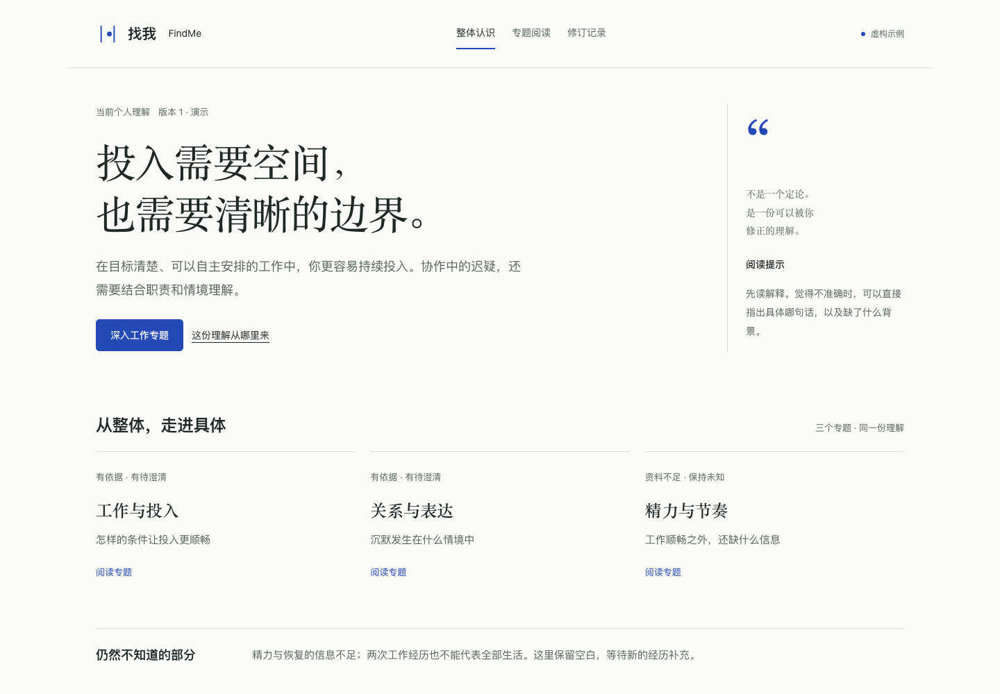
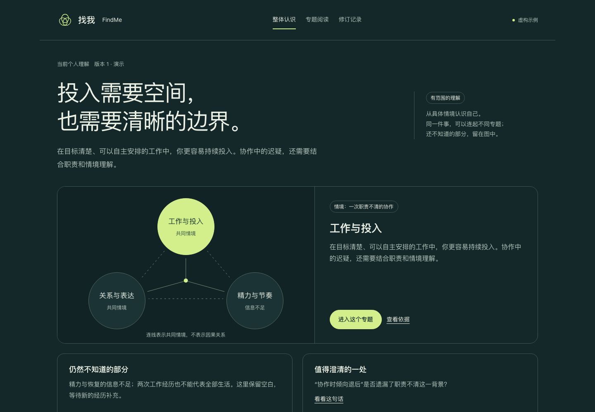
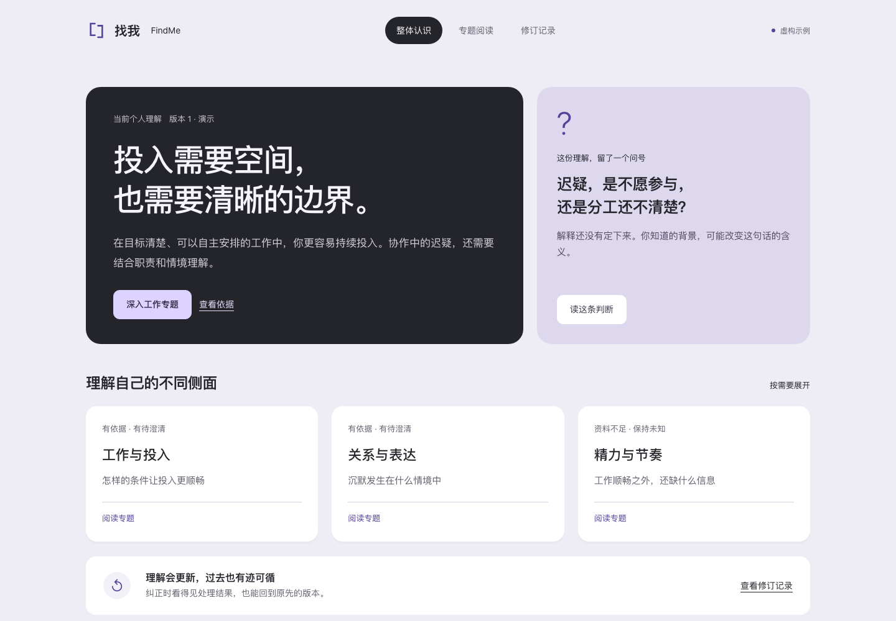
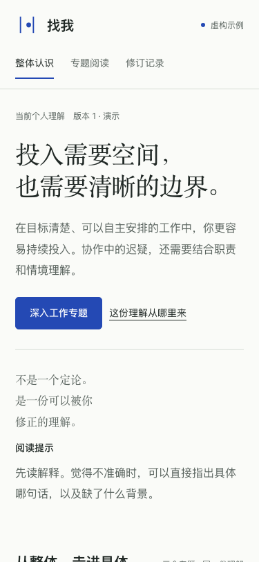
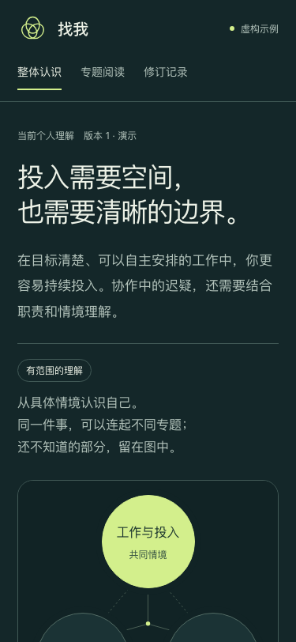
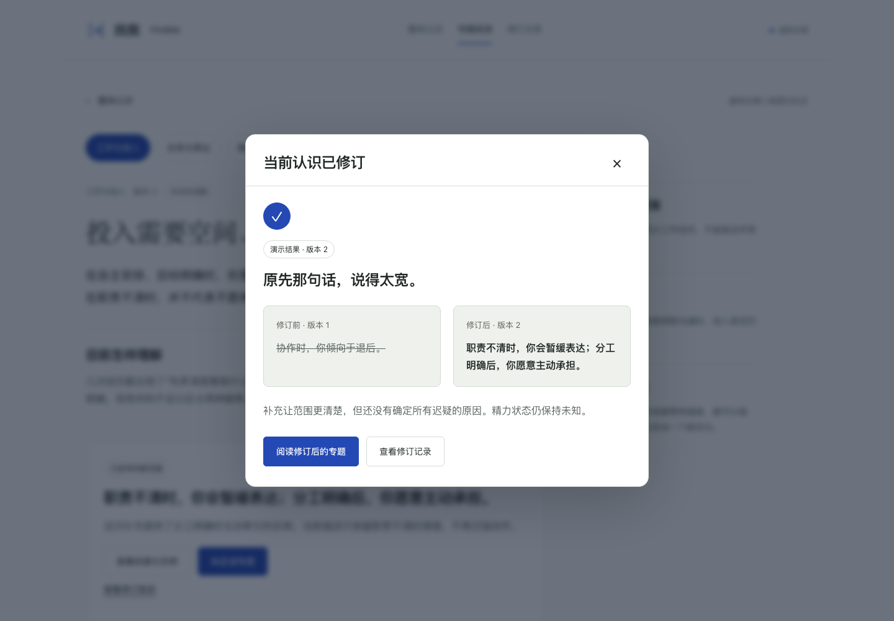
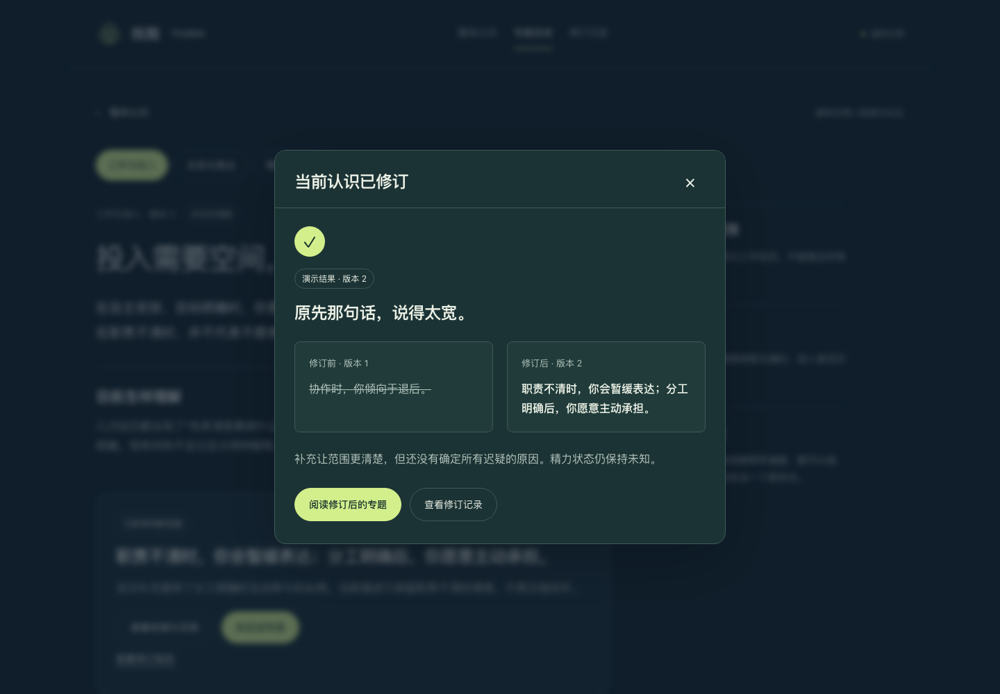
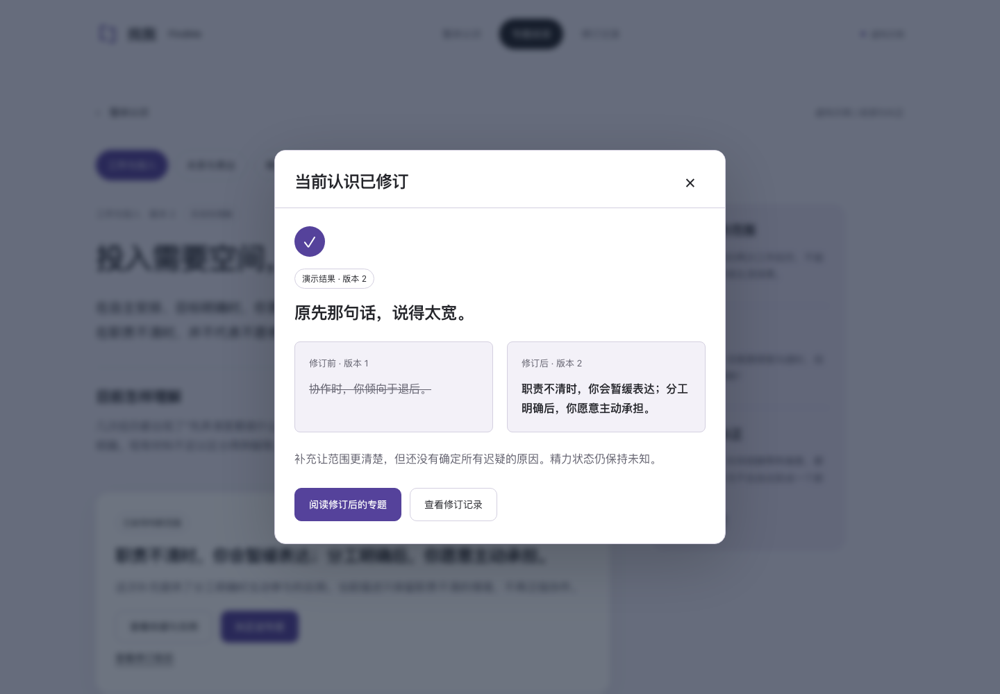

查看完整 B 原型；查看深化版手机、电脑效果与完整纠正修订原型
三版共享同一组内容，比较信息如何组织、依据如何展开、纠正如何改变当前认识。以下是历史比较；当前设计以 B 完整原型为准。
正文与边注分开，蓝白、宋体标题。阅读最直接，适合作为主方向。

深墨蓝的专题关系图，与可阅读解释并置。关联清楚，小屏阅读更长。

紫灰底、黑色摘要与白色专题卡。修订醒目，视觉层次较多。

进入工作专题 → 依据与反例 → 纠正这句话 → 填入虚构示例背景 → 提交 → 阅读修订后的专题。
固定示例展示版本1与版本2。自行输入会显示“待核验”，不调用模型。刷新重置演示。




